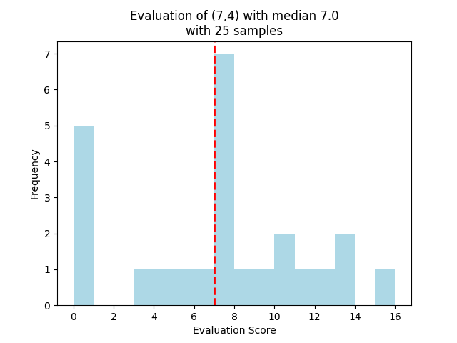
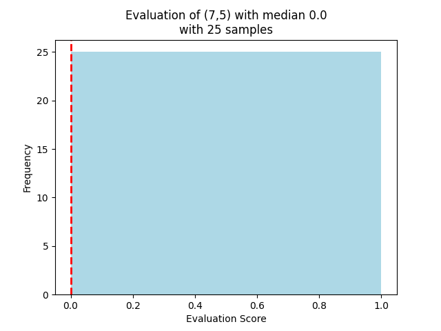

While reading a short story by the argentine writer Jorge Luis Borges titled "Pierre Menard, Author of Don Quixote", about a fictional scholar and his works, I stumbled upon something absurd the main character wrote about chess:
[he wrote] "a technical article on the possibility of enriching the game of chess by means of eliminating one of the rooks' pawns. Menard proposes, recommends, disputes and ends by rejecting this innovation."
This "proposal" is simply crazy, one could just laugh and dismiss it as a funny joke by the witty Borges; but all of this gave me an idea, and it might be not as crazy:
I started to search for the fairest starting position one could get by removing only a pawn from each side.
Pierre Menard only said "one of the rooks' pawns", so we can interpret it like this, a stupid setup where white can start by capturing black's rook right off and start winning:

or (more reasonably) we could see it like this:

This is not as absurd as before and actually it could make for a nice asymmetric and balanced gameplay!
Eureka moment 💡: in search of chess’s fairest start
What if, instead of comparing only "Menard's" setup to the default starting position, we consider every possible starting position in which we remove a pawn for each side, and we find a way to measure it's fairness compared to the default starting position?
What does every position mean?
Let's say we removed the sixth pawn from white's row and the fourth one (by our perspective) from black's:

For our purposes, we'll call this position (6, 4), meaning (6th pawn removed from white, 4th pawn removed from black).
So in our analysis we'll consider every combination (w,b) with w and b ranging independently from 1 to 8, according to the pawn removed.
Measuring a position's fairness
Isn't it strange to think that it's possible to measure pretty accurately who's winning a chess match with just a number? The unfathomable complexity of chess would say otherwise.
Neural network comes to rescue!
Fortunately Stockfish, the strongest chess engine (AI) in the world as of today, has the only two things we need:
- the ability to evaluate chess positions with a single number, based on the calculation of (almost) every possible future opponent move up to a certain depth,
- a very user-friendly python library to use it on one's own computer.
How does Stockfish quantify advantage
Loading a chess position into Stockfish is pretty simple, we just need to feed it it's FEN (Forsyth-Edwards Notation) which is a standard format to tell where the pieces are at (the last example would have this FEN: rnbqkbnr/ppp1pppp/8/8/8/8/PPPPP1PP/RNBQKBNR w KQkq - 0 1).
After the position is loaded, we can make it calculate the advantage with a simple function: we'll get the result in centipawns.
Centipawns are just "cents of a pawn", so if the position has an evaluation of -20, it means as if black had a fifth of a pawn of advantage (20/100 pawns) more than white;
the sign tell us who's winning (+ for white and -for black).
Fun fact: as is stated in the title, chess default starting setup is objectively unfair, because white has around +20 centipawns of advantage.
We can also normalize the evaluation in centipawns with the formula of the curve below to get the draw probability (assuming a "perfect" play), an effective measure of a position's fairness or balance.
Draw probability % = 100 × 2^(-(centipawns/100)²)

Visualizing every combination's draw probability
After writing an running the python script for days, I was able to get a general overview of the draw probabilities according to which pawns were removed.

I labeled the pawns based on which piece they had behind for a better visualization.
Notice that nearly half (28) of our custom positions are more balanced than the default starting one!
Even one of Pierre Menard's proposal interpretations is slightly more balanced, proving our initial point!
However the two most balanced ones strike clear with this color palette:
(7, 4)and(7, 5).
Two contestants: finding the winner
I made a second script to test a single position to a greater depth (40 half-moves in the future rather then 30 like before), and these are the results (in centipawns):


This is astonishing: position (7,5) always gave 0 centipawns of advantage. Consistently. FOR 25 TIMES.

The winner is clear, according to Stockfish, this is the most balanced starting position you could get by removing a pawn for side and playing without blunders:

Is this position the fairest of them all? Only one way to find out: play it.